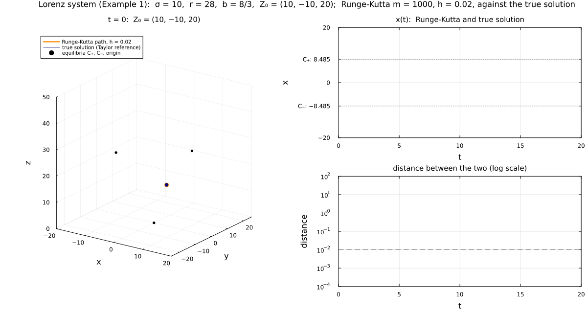

Lorenz Attractor
Source inspiration: (Mathew 2000-2019).
Description
The Lorenz equations are a system of three nonlinear first-order differential equations that Edward Lorenz obtained in 1963 by simplifying a model of convection in a layer of fluid heated from below, a crude model of convection in the atmosphere:
\[ x' = \sigma\,(y - x), \qquad y' = r\,x - y - x\,z, \qquad z' = x\,y - b\,z . \]
With Lorenz’s parameter values \(\sigma = 10\), \(r = 28\), \(b = 8/3\) a typical solution does not settle down to a steady state or a periodic motion. It winds around two unstable equilibrium points, switching from one to the other at irregular times, and two solutions that start close together separate, on average, exponentially fast. The set the solutions are drawn to is the Lorenz attractor, a famous example of a strange attractor and of chaos.
No formula gives the solution, so it is computed numerically. Mathews solves the initial value problem \(\mathbf{Z}' = \mathbf{F}(t, \mathbf{Z})\), \(\mathbf{Z}(t_0) = \mathbf{Z}_0\), with \(\mathbf{Z} = (x, y, z)\), with the classical fourth-order Runge-Kutta method applied to the whole vector at once, with a fixed step \(h\):
\[ \mathbf{Z}_{j+1} = \mathbf{Z}_j + \tfrac16\bigl(\mathbf{k}_1 + 2\mathbf{k}_2 + 2\mathbf{k}_3 + \mathbf{k}_4\bigr), \]
and also with Mathematica’s adaptive solver over a longer interval. The same tools then draw the Rössler attractor, a simpler-looking system with only one nonlinear term. Because these solutions are chaotic, every computed trajectory on this page was checked against an independent high-accuracy solution (for the chaotic runs, a high-order Taylor series method in 50-digit arithmetic), and the page reports how long each numerical solution stays close to the true one.
Animations
Each animation below traces solutions of these systems in three dimensions or in a projection, beside their coordinate functions against time and, for the Lorenz system, the distance between two solutions on a log scale. Because the motion is chaotic, a numerical path is not drawn as if it were the solution. Cases 1 and 3 draw the Runge-Kutta path (5) that Mathews computes (orange) over the true solution (navy) and report the distance between them; Case 2 draws two true solutions. Each “true solution” is a reference computed in the script itself by a Taylor series method of order \(30\) with step \(0.01\) in \(200\)-bit (about \(60\)-digit) arithmetic; it agrees with the independent references used in the examples below to within \(2.2 \times 10^{-14}\) over \(0 \le t \le 50\). The last frame of each animation is held for three seconds.
Mathews’ module links no animation, and his animation archive has none for the Lorenz or Rössler systems, so all three animations are new, with no Mathews original. Their equations and starting values are those of Examples 1, 2, 5 and 6, with Mathews’ “about 1000” Runge-Kutta steps; the intervals are this page’s choice, since Mathews’ were lost. Not animated are Examples 3 and 4 at \(r = 470/19\), whose starting values are lost (their tables describe the runs from this page’s starts A and B); the adaptive NDSolve runs of Example 2, which leave the true solution part way through the interval (Case 2 shows why, with true solutions on that interval instead); and some of Mathews’ graphs of the solutions that are animated: the projections on the coordinate planes in Examples 1, 5 and 6, \(y(t)\) in those three examples, \(z(t)\) in Example 1, and the 3-D curve of Example 2.
Julia source scripts that generated these animations are linked under each case.
Case 1 — Example 1: Runge-Kutta path against the true solution, \(r = 28\), \(\mathbf{Z}_0 = (10, -10, 20)\), \(m = 1000\), \(h = 0.02\) on \([0, 20]\)
Behavior: Five Runge-Kutta steps are drawn per frame. At first the orange path and the navy true solution lie on top of each other, winding around \(C_+\) and \(C_-\) in turn. The distance between them, checked at every step, first exceeds \(0.01\) at \(t = 1.72\) (purple dot) and does not grow steadily: it is \(0.164\) at \(t = 2\) and \(0.0394\) at \(t = 5\). It first exceeds \(1\) at \(t = 6.86\) (red dot), and from then on it stays above \(1\), reaching \(44.2\) at \(t = 15.90\): the two curves now visibly separate in the 3-D view and in \(x(t)\). The Runge-Kutta path keeps winding around the same two equilibria, inside the box of the true solution, but along a different path. It changes the sign of \(x\) \(10\) times instead of \(12\) and ends at \(\mathbf{Z}_{1000} = (3.613, 3.758, 20.98)\), a distance \(8.24\) from the true value \((5.666, 1.866, 28.74)\).

Case 2 — Example 2’s interval \([0, 50]\): true solutions from \((10, -10, 20)\) and \((10 + 10^{-10}, -10, 20)\)
Behavior: Both solutions are computed in \(60\)-digit arithmetic, so what separates them is the change of \(10^{-10}\) in \(x(0)\), not numerical error. The left panel is the projection on the \(xy\)-plane and the top right panel \(x(t)\), the graphs Mathews draws in Example 2; the last \(1.5\) time units are bold. The distance between the solutions grows roughly like \(10^{-10} e^{0.90\,t}\) (dashed line), where \(0.90\) is the largest Lyapunov exponent found in Example 1, though not steadily (a least-squares fit of \(\ln(\text{distance})\) on \(2 \le t \le 24.97\) has slope \(0.853\)). It first exceeds \(10^{-6}\) at \(t = 7.09\), \(10^{-2}\) at \(t = 18.93\) and \(1\) at \(t = 24.97\) (red dot), when the two \(x(t)\) curves begin to part. From then on it stays between \(0.49\) and \(45.35\), the size of the attractor, and the two solutions wind around \(C_+\) and \(C_-\) in the same region but at different times: on \([0, 50]\) the solution from \((10, -10, 20)\) changes the sign of \(x\) \(28\) times and the other \(31\) times, and at \(t = 50\) they are at \((2.067, 3.591, 19.02)\) and \((-8.053, -1.247, 33.64)\). An initial error of \(10^{-10}\), far below anything a plot can show, is all it takes to lose the solution halfway through Example 2’s interval.

Case 3 — Examples 5 and 6: Rössler attractors, \((a, b, c) = (0.2, 0.2, 5.7)\) and \((0.343, 1.82, 9.75)\), \(\mathbf{Z}_0 = (9, 0, 1)\), \(m = 1000\), \(h = 0.05\) on \([0, 50]\)
Behavior: The two Runge-Kutta solutions are traced together, five steps per frame, Example 5 on the left and Example 6 on the right. Each spirals outward around the \(z\)-axis close to the \(xy\)-plane, and each spike of \(z\) above \(5\) comes about \(0.3\) to \(0.6\) time units after \(x\) reaches a maximum above \(c\). Example 5 has four such spikes on \([0, 50]\), the tallest \(23.65\) at \(t = 6.26\). Example 6 has eight; the four tallest, from \(51.80\) to \(65.98\), make its attractor much taller. The largest distance so far between the orange Runge-Kutta path and the navy true solution is printed in each title: it ends at \(0.057\) for Example 5 and \(0.47\) for Example 6, whose distance first exceeds \(0.1\) at \(t = 26.50\). Unlike the Lorenz runs, these paths stay close to the true solutions over the whole interval.

The Lorenz Equations
The Lorenz system is
\[ x' = \sigma\,(y - x), \qquad y' = r\,x - y - x\,z, \qquad z' = x\,y - b\,z, \tag{1} \]
with positive parameters \(\sigma\), \(r\) and \(b\). In the convection model, \(\sigma\) is the Prandtl number, \(r = Ra/Ra_c\) is the Rayleigh number divided by its critical value, and \(b\) is a geometric factor. Lorenz used \(\sigma = 10\), \(r = 28\) and \(b = 8/3\). Mathews writes \(p\) for \(\sigma\) and \(c\) for \(b\).
Two structural facts hold for every choice of the parameters.
- Symmetry. Replacing \((x, y, z)\) by \((-x, -y, z)\) leaves (1) unchanged, so the mirror image of a solution in the \(z\)-axis is again a solution.
- Volume contraction. The divergence of the vector field is \[ \frac{\partial x'}{\partial x} + \frac{\partial y'}{\partial y} + \frac{\partial z'}{\partial z} = -(\sigma + 1 + b), \] a negative constant, so every volume of initial points shrinks by the factor \(e^{-(\sigma + 1 + b)t}\) along the flow. For Lorenz’s values \(\sigma + 1 + b = 41/3\), and the factor is \(e^{-41/3} \approx 1.16 \times 10^{-6}\) per unit of time. The attractor therefore has zero volume.
Equilibrium points
Setting the three right-hand sides of (1) to zero gives \(y = x\), \(z = x^2/b\) and \(x\bigl(r - 1 - x^2/b\bigr) = 0\). The origin \((0, 0, 0)\) is always an equilibrium; it corresponds to no convection. For \(r > 1\) there are two more,
\[ C_{\pm} = \Bigl(\pm\sqrt{b\,(r - 1)},\ \pm\sqrt{b\,(r - 1)},\ r - 1\Bigr), \tag{2} \]
which correspond to steady convection, the fluid turning one way or the other. For \(\sigma = 10\), \(r = 28\), \(b = 8/3\) they are \(C_\pm = (\pm 6\sqrt{2}, \pm 6\sqrt{2}, 27) \approx (\pm 8.4853, \pm 8.4853, 27)\).
The origin. The Jacobian matrix of (1) at the origin has the eigenvalue \(-b\) and the two roots of \(\lambda^2 + (\sigma + 1)\lambda + \sigma(1 - r) = 0\). For \(0 < r < 1\) the product of those two roots, \(\sigma(1 - r)\), is positive and their sum is negative, so all three eigenvalues are negative and the origin is stable. For \(r > 1\) the product is negative, one root is positive, and the origin is unstable. At \(r = 28\) the eigenvalues are \(-8/3\) and \((-11 \pm \sqrt{1201})/2\), that is \(-2.6667\), \(11.8277\) and \(-22.8277\).
The points \(C_\pm\). At both points the Jacobian has the characteristic polynomial
\[ \lambda^3 + (\sigma + b + 1)\,\lambda^2 + b\,(\sigma + r)\,\lambda + 2\sigma b\,(r - 1) = 0. \tag{3} \]
All coefficients are positive for \(r > 1\), so by the Routh-Hurwitz criterion all three roots have negative real part exactly when the product of the two middle coefficients exceeds the last one, \((\sigma + b + 1)\,b\,(\sigma + r) > 2\sigma b\,(r - 1)\). This rearranges to \(r\,(\sigma - b - 1) < \sigma\,(\sigma + b + 3)\).
Let \(\sigma > b + 1\) and \(r > 1\). The equilibrium points \(C_\pm\) are asymptotically stable if
\[ r < r_H = \frac{\sigma\,(\sigma + b + 3)}{\sigma - b - 1}, \tag{4} \]
and unstable if \(r > r_H\). At \(r = r_H\) two eigenvalues of (3) are a purely imaginary pair (a Hopf bifurcation), and the linearization alone does not decide stability.
Mathews prints condition (4) with an equals sign, as if \(C_\pm\) were stable only at \(r = r_H\); the inequality is the correct statement. For \(\sigma = 10\) and \(b = 8/3\),
\[ r_H = \frac{10\,(10 + \tfrac83 + 3)}{10 - \tfrac83 - 1} = \frac{470}{19} \approx 24.7368, \]
so Lorenz’s \(r = 28\) lies beyond the threshold and both \(C_\pm\) are unstable. The table lists the roots of (3) at the two values of \(r\) used in the examples.
| \(r\) | Eigenvalues at \(C_\pm\) | Stability of \(C_\pm\) |
|---|---|---|
| \(28\) | \(-13.8546\), \(\ 0.0940 \pm 10.1945\,i\) | unstable spiral (complex pair has positive real part) |
| \(470/19 \approx 24.7368\) | \(-41/3 \approx -13.6667\), \(\ \pm \tfrac{4\sqrt{2090}}{19}\,i \approx \pm 9.6245\,i\) | borderline: purely imaginary pair |
Verification: at \(r = 470/19\) the polynomial (3) factors exactly as \(\tfrac{1}{57}(3\lambda + 41)(19\lambda^2 + 1760)\). Scanning \(r\) from \(1.0001\) to \(60\) in \(200{,}000\) steps, the largest real part of the roots of (3) is negative at every sample with \(r < 470/19\) and positive at every sample with \(r > 470/19\). Near \(C_\pm\) at \(r = r_H\) a solution turns about the point with angular frequency \(\omega = \sqrt{1760/19} \approx 9.6245\), a period of \(2\pi/\omega \approx 0.6528\).
Runge-Kutta Method for Systems
Mathews writes the three equations as one vector equation,
\[ \mathbf{Z}' = \mathbf{F}(t, \mathbf{Z}), \qquad \mathbf{Z}(t_0) = \mathbf{Z}_0, \qquad \mathbf{Z} = (x, y, z), \quad \mathbf{F} = (f_1, f_2, f_3), \]
on an interval \(t_0 \le t \le t_m\) divided into \(m\) subintervals.
With \(h = (t_m - t_0)/m\) and \(t_j = t_0 + j\,h\), for \(j = 0, 1, \ldots, m - 1\):
\[ \begin{aligned} \mathbf{k}_1 &= h\,\mathbf{F}(t_j, \mathbf{Z}_j), \\ \mathbf{k}_2 &= h\,\mathbf{F}\bigl(t_j + \tfrac h2, \mathbf{Z}_j + \tfrac12\mathbf{k}_1\bigr), \\ \mathbf{k}_3 &= h\,\mathbf{F}\bigl(t_j + \tfrac h2, \mathbf{Z}_j + \tfrac12\mathbf{k}_2\bigr), \\ \mathbf{k}_4 &= h\,\mathbf{F}(t_j + h, \mathbf{Z}_j + \mathbf{k}_3), \\ \mathbf{Z}_{j+1} &= \mathbf{Z}_j + \tfrac16\bigl(\mathbf{k}_1 + 2\mathbf{k}_2 + 2\mathbf{k}_3 + \mathbf{k}_4\bigr). \end{aligned} \tag{5} \]
This is the scalar Runge-Kutta method of order 4 with every quantity replaced by a vector; Mathews’ subroutine returns the list of points \(\mathbf{Z}_0, \mathbf{Z}_1, \ldots, \mathbf{Z}_m\). For a smooth \(\mathbf{F}\) its global error on a fixed interval is \(O(h^4)\). On the Lorenz system this holds over a short interval: for the start of Example 1, the error at \(t = 0.5\) falls by the factors \(21.0\), \(18.4\), \(17.2\), \(16.5\) and \(16.3\) as \(h\) is halved from \(0.02\) to \(0.000625\), approaching \(2^4 = 16\). Over longer intervals the chaos takes over, as Example 1 shows. Mathews remarks that the curve “twists a lot in 3D space” and uses about \(1000\) subintervals to draw it with good resolution.
Mathews’ module states each example’s equations and initial values, but the intervals, step counts, plots and output of his solutions were images that are missing from the archive; only his remarks between them survive. Where this page needs a value his surviving text does not give (an interval, a number of steps, and the initial values in Examples 3 and 4), it says so and states the value it uses.
Example 1 — Runge-Kutta solution of the Lorenz system, \(r = 28\)
Solve
\[ \begin{aligned} x' &= -10\,x + 10\,y, & x(0) &= 10, \\ y' &= 28\,x - y - x\,z, & y(0) &= -10, \\ z' &= -\tfrac83\,z + x\,y, & z(0) &= 20, \end{aligned} \]
which is (1) with Lorenz’s parameters \(\sigma = 10\), \(r = 28\), \(b = 8/3\).
Setup. Mathews uses his Runge-Kutta subroutine (5) with about \(1000\) subintervals and plots the solution curve in 3D, its projections on the three coordinate planes, and the coordinate functions \(x(t)\), \(y(t)\), \(z(t)\). His interval is not in the surviving text; this page uses \(0 \le t \le 20\) with \(m = 1000\), so \(h = 0.02\).
Step 1 (first step, \(j = 0\)): at \(\mathbf{Z}_0 = (10, -10, 20)\),
\[ \mathbf{F}(0, \mathbf{Z}_0) = \bigl(10(-10 - 10),\ 28 \cdot 10 + 10 - 200,\ -100 - \tfrac{160}{3}\bigr) = \bigl(-200,\ 90,\ -\tfrac{460}{3}\bigr), \]
so \(\mathbf{k}_1 = 0.02\,\mathbf{F} = (-4,\ 1.8,\ -3.0667)\). The other three stages follow (5), and the steps repeat \(1000\) times.
Step 2 (the computed path): the table compares the Runge-Kutta values with the reference solution at selected times.
| \(t\) | Runge-Kutta, \(h = 0.02\) | Reference solution | Distance |
|---|---|---|---|
| \(0.5\) | \((-9.5859,\ 0.0031,\ 37.2146)\) | \((-9.5873,\ 0.0025,\ 37.2169)\) | \(0.00275\) |
| \(1\) | \((8.3939,\ 13.9951,\ 16.6773)\) | \((8.3960,\ 13.9975,\ 16.6818)\) | \(0.00554\) |
| \(2\) | \((4.7971,\ 9.5435,\ 6.6833)\) | \((4.8680,\ 9.6785,\ 6.7439)\) | \(0.164\) |
| \(5\) | \((-4.6985,\ -1.6299,\ 27.1184)\) | \((-4.6740,\ -1.6053,\ 27.0997)\) | \(0.0394\) |
| \(7\) | \((-3.2142,\ -6.3090,\ 6.9110)\) | \((-1.4388,\ -2.8438,\ 6.2036)\) | \(3.96\) |
| \(10\) | \((9.7948,\ 3.1987,\ 35.1591)\) | \((9.2272,\ 4.1186,\ 33.3093)\) | \(2.14\) |
| \(20\) | \((3.6132,\ 3.7584,\ 20.9819)\) | \((5.6661,\ 1.8663,\ 28.7362)\) | \(8.24\) |
Result. The computed curve winds around \(C_+\) and \(C_-\) in turn. The true solution changes the sign of \(x\), crossing from the side of one equilibrium to the other, \(12\) times in \(0 \le t \le 20\), and stays in the box \(-17.99 \le x \le 17.87\), \(-24.17 \le y \le 23.93\), \(5.72 \le z \le 44.70\). But the Runge-Kutta path is the true solution only at the start. Checked at every \(t = 0, 0.02, \ldots, 20\), the distance between the two first exceeds \(0.01\) at \(t = 1.72\) and first exceeds \(1\) at \(t = 6.86\); it does not grow steadily (it is \(0.164\) at \(t = 2\) and \(0.0394\) at \(t = 5\)), but after \(t \approx 7\) the Runge-Kutta values follow a different path around the same attractor (they stay inside the box of the true solution).
Verification. A smaller step only delays the separation. The time at which the distance from the reference first exceeds \(1\) is:
| \(m\) | \(h\) | First \(t\) with distance \(> 1\) (checked at \(t = 0, 0.02, \ldots, 20\)) |
|---|---|---|
| \(1000\) | \(0.02\) | \(6.86\) |
| \(2000\) | \(0.01\) | \(7.24\) |
| \(4000\) | \(0.005\) | \(15.04\) |
| \(8000\) | \(0.0025\) | \(18.82\) |
| \(16000\) | \(0.00125\) | never on \([0, 20]\) (largest distance \(0.42\)) |
Over a short interval each halving of \(h\) divides the Runge-Kutta error by about \(16\) (as shown after (5)), but on the attractor errors grow on average like \(e^{\lambda t}\) with \(\lambda \approx 0.90\) (the largest Lyapunov exponent, estimated as \(0.9036\) and \(0.9019\) from runs of length \(2000\) and \(4000\)). Dividing an error by \(16\) therefore buys on average only about \(\ln 16 / 0.90 \approx 3\) units of time; the actual gains in the table are irregular. The reference solution itself was computed by a Taylor series method of order \(30\) with step \(0.01\) in \(50\)-digit arithmetic, and it agrees with an order-\(40\), \(60\)-digit run to within \(2.2 \times 10^{-14}\) over \(0 \le t \le 50\).
Example 2 — Adaptive solution of the Lorenz system over a longer interval
Solve the initial value problem of Example 1 again, this time with Mathematica’s NDSolve procedure.
Setup. NDSolve chooses its own step sizes to meet an error tolerance, and Mathews uses it to solve over an interval larger than in Example 1. He warns that without an option raising the step limit, NDSolve stops with the message “Maximum number of 1000 steps reached at the point t == 11.146875180780313”. He plots the curve in 3D (noting that it needs many plot points to show the “true curve”), its projection on the \(xy\)-plane, and \(x(t)\). His interval is not in the surviving text; this page uses \(0 \le t \le 50\).
Step 1 (the step count): an adaptive solver needs thousands of steps on this interval. Three double-precision SciPy solvers, at the four tolerance settings in the table below, took between \(2145\) and \(7160\) steps on \(0 \le t \le 50\); the LSODA solver at tolerance \(10^{-8}\) had used up \(1000\) steps by \(t \approx 7.15\).
Step 2 (the solution): the reference values are
| \(t\) | \(10\) | \(20\) | \(30\) | \(40\) | \(50\) |
|---|---|---|---|---|---|
| \(x\) | \(9.2272\) | \(5.6661\) | \(5.1964\) | \(-1.8113\) | \(2.0666\) |
| \(y\) | \(4.1186\) | \(1.8663\) | \(2.3362\) | \(-1.8074\) | \(3.5908\) |
| \(z\) | \(33.3093\) | \(28.7362\) | \(27.2607\) | \(18.9150\) | \(19.0205\) |
On \(0 \le t \le 50\) the solution changes the sign of \(x\) \(28\) times, at irregular intervals, and stays in the box \(-17.99 \le x \le 18.72\), \(-24.17 \le y \le 25.54\), \(3.65 \le z \le 46.13\).
Verification. Every double-precision solver eventually loses the true solution, however tight its tolerance:
| Solver (SciPy) | Tolerance | Steps on \([0, 50]\) | First \(t\) with distance from reference \(> 1\) |
|---|---|---|---|
| DOP853 (order 8) | \(10^{-12}\) | \(3966\) | \(28.75\) |
| DOP853 (order 8) | \(10^{-10}\) | \(2218\) | \(22.01\) |
| LSODA | \(10^{-8}\) | \(7160\) | \(16.55\) |
| RK45 | \(10^{-6}\) | \(2145\) | \(13.50\) |
With errors growing like \(e^{0.90\,t}\), an error of \(10^{-12}\) reaches size \(1\) after about \(\ln(10^{12})/0.90 \approx 31\) time units, close to the \(28.75\) observed. Even a solver with no truncation error, working in double precision, would lose the solution at about \(t \approx \ln(10^{16})/0.90 \approx 41\), because rounding errors of order \(10^{-16}\) grow just as fast. After an adaptive solution loses the true one, it keeps winding around \(C_+\) and \(C_-\) in the same region (the values of each of the four runs on \([0, 50]\) stay inside the reference solution’s box, to within \(10^{-4}\)), but along a different path: the four runs change the sign of \(x\) \(29\) to \(37\) times instead of \(28\). The reference solution in the table is accurate over the whole interval because it carries 50 digits.
Examples 3 and 4 — The Lorenz system at \(r = 470/19\)
Example 3. Solve
\[ x' = -10\,x + 10\,y, \qquad y' = \tfrac{470}{19}\,x - y - x\,z, \qquad z' = -\tfrac83\,z + x\,y \]
with the Runge-Kutta method (5). Example 4. Solve the same system with an adaptive solver (Mathews uses NDSolve).
This is (1) with \(\sigma = 10\), \(b = 8/3\) and \(r = 470/19 \approx 24.7368\), exactly the threshold \(r_H\) of (4): the value of \(r\) at which the equilibria \(C_\pm\) lose their stability. Mathews’ problem statement gives only the equations, and his initial values were in the lost images. His surviving text says he follows a “green” curve and a “blue” curve, and that the last \(322\) computed points, found by trial and error, show what is happening (the word naming the curve is missing). This page uses two starting points:
- Start A: \(\mathbf{Z}_0 = (10, -10, 20)\), the initial values of Example 1;
- Start B: \(\mathbf{Z}_0 = \bigl(\sqrt{3608/57},\ \sqrt{3608/57},\ 470/19\bigr) \approx (7.9560,\ 7.9560,\ 24.7368)\), one unit above the equilibrium \(C_+ = \bigl(\sqrt{3608/57}, \sqrt{3608/57}, 451/19\bigr) \approx (7.9560, 7.9560, 23.7368)\) given by (2).
Example 3 — Runge-Kutta solution, \(0 \le t \le 20\), \(m = 1000\)
Start A. The Runge-Kutta values (with \(h = 0.02\)) against the reference solution:
| \(t\) | Runge-Kutta, \(h = 0.02\) | Reference solution | Distance |
|---|---|---|---|
| \(1\) | \((-2.5677,\ -4.5031,\ 8.9412)\) | \((-2.5661,\ -4.5002,\ 8.9407)\) | \(0.00335\) |
| \(2\) | \((11.6915,\ 16.7635,\ 21.5025)\) | \((11.6929,\ 16.7623,\ 21.5095)\) | \(0.0072\) |
| \(5\) | \((0.5736,\ 1.1935,\ 14.8913)\) | \((0.5909,\ 1.2218,\ 14.9259)\) | \(0.0479\) |
| \(7\) | \((-1.0147,\ -1.8736,\ 6.5572)\) | \((-0.1413,\ -0.2599,\ 6.4878)\) | \(1.84\) |
| \(10\) | \((3.8387,\ 5.8113,\ 13.7088)\) | \((4.5265,\ 5.5655,\ 17.7373)\) | \(4.09\) |
| \(20\) | \((11.0718,\ 16.3470,\ 20.0282)\) | \((-0.1965,\ 0.0707,\ 14.7615)\) | \(20.5\) |
As in Example 1, the distance first exceeds \(0.01\) at \(t = 1.16\) and \(1\) at \(t = 6.94\), so from about \(t = 7\) on the Runge-Kutta path is no longer the solution from start A. The true solution changes the sign of \(x\) \(9\) times in \(0 \le t \le 20\). Between \(t \approx 7.8\) and \(t \approx 16.6\) it stays on the \(C_+\) side and spirals outward around \(C_+\): the \(12\) successive maxima of \(z\) in that stretch increase from \(29.40\) to \(35.28\), until the solution is thrown across to the other side. This is its longest stay on one side in \(0 \le t \le 50\).
Start B. Starting one unit from \(C_+\), the solution circles \(C_+\) about \(30\) times in \(0 \le t \le 20\) (it has \(30\) maxima of \(z\), close to \(20/0.6528 \approx 30.6\) turns of period \(2\pi/\omega\)). Its distance from \(C_+\) stays between \(0.756\) and \(1.000\), and \(x\) stays above \(7.44\), so it never leaves the neighbourhood of \(C_+\) on this interval. Here the Runge-Kutta path with \(h = 0.02\) is accurate: it differs from an adaptive solution with tolerance \(10^{-13}\) by at most \(0.0021\) on \([0, 20]\).
Example 4 — Adaptive solution, \(0 \le t \le 50\)
Start A. The reference values are
| \(t\) | \(10\) | \(20\) | \(30\) | \(40\) | \(50\) |
|---|---|---|---|---|---|
| \(x\) | \(4.5265\) | \(-0.1965\) | \(4.7936\) | \(-9.5530\) | \(1.7223\) |
| \(y\) | \(5.5655\) | \(0.0707\) | \(-1.4246\) | \(-13.1505\) | \(0.4716\) |
| \(z\) | \(17.7373\) | \(14.7615\) | \(28.1102\) | \(20.3887\) | \(19.8312\) |
On \(0 \le t \le 50\) the solution changes the sign of \(x\) \(26\) times and stays in the box \(-17.03 \le x \le 16.46\), \(-22.52 \le y \le 21.48\), \(3.36 \le z \le 40.13\). It does not settle at \(C_\pm\) or on a periodic orbit: the largest Lyapunov exponent along it is positive, estimated as \(0.8215\) and \(0.8150\) from runs of length \(2000\) and \(4000\), so the motion at \(r = r_H\) is still chaotic. As in Example 2, double-precision adaptive solvers lose the true solution part way: at tolerance \(10^{-12}\) (DOP853) the distance from the reference first exceeds \(1\) at \(t = 32.26\), at \(10^{-10}\) at \(t = 20.68\).
Start B, followed longer. At \(r = r_H\) the linearization at \(C_+\) has a purely imaginary pair, so it cannot say whether nearby solutions approach \(C_+\) or leave it. For start B the computation shows the solution moving away from \(C_+\), but very slowly. Over \(0 \le t \le 300\) the solution never changes the sign of \(x\) (\(x \ge 7.20\) throughout), and its distance from \(C_+\) creeps up:
| Time window | Distance from \(C_+\) |
|---|---|
| \(0 \le t \le 10\) | \(0.756\) to \(1.000\) |
| \(90 \le t \le 100\) | \(0.829\) to \(1.061\) |
| \(190 \le t \le 200\) | \(0.943\) to \(1.212\) |
| \(290 \le t \le 300\) | \(1.123\) to \(1.455\) |
Verification. Start B was integrated with an adaptive eighth-order method at tolerances \(10^{-12}\) and \(10^{-10}\), which give the same distances to three decimals. For start A, the reference solution was computed as in Example 1 and agrees with an order-\(40\), \(60\)-digit run to within \(3.6 \times 10^{-15}\) over \(0 \le t \le 50\).
The Rössler Attractor
In 1976 Otto Rössler, studying oscillations in chemical reactions, proposed a system with a chaotic attractor that has only one nonlinear term. Mathews notes that Rössler was looking for a minimal system that would show chaos, and that his system looks simpler than the Lorenz system but is harder to analyze.
The Rössler system is
\[ x' = -(y + z), \qquad y' = x + a\,y, \qquad z' = b + x\,z - c\,z, \tag{6} \]
with positive parameters \(a\), \(b\), \(c\). Rössler used \(a = 0.2\), \(b = 0.2\), \(c = 5.7\); Mathews gives \(a = 0.343\), \(b = 1.82\), \(c = 9.75\) as values that produce Rössler’s “screw” chaos.
While \(z\) is small, the first two equations make a solution spiral outward around the \(z\)-axis. Once \(x\) exceeds \(c\), the factor \(x - c\) in \(z' = b + (x - c)\,z\) is positive and \(z\) grows rapidly; the large \(z\) then drives \(x\) down through \(x' = -(y + z)\), \(z\) collapses, and the solution starts a new spiral closer to the \(z\)-axis. In Example 5, after each of the first six spikes with \(z > 5\), the distance from the \(z\)-axis drops from a maximum of \(10.4\) to \(12.4\) in the three time units before the spike to a minimum of \(1.8\) to \(5.0\) within four time units after it.
Equilibrium points. From \(y' = 0\), \(y = -x/a\); from \(x' = 0\), \(z = -y = x/a\); and \(z' = 0\) then gives \(x^2 - c\,x + a\,b = 0\). When \(c^2 > 4ab\) there are two equilibria,
\[ x = \frac{c \pm \sqrt{c^2 - 4ab}}{2}, \qquad y = -\frac{x}{a}, \qquad z = \frac{x}{a}. \tag{7} \]
| Parameters | Equilibrium | Eigenvalues of the Jacobian |
|---|---|---|
| \(a = b = 0.2\), \(c = 5.7\) | \((0.0070,\ -0.0351,\ 0.0351)\) | \(0.0970 \pm 0.9952\,i\), \(\ -5.6870\) |
| \((5.6930,\ -28.4649,\ 28.4649)\) | \(0.1930\), \(\ -4.6 \times 10^{-6} \pm 5.4280\,i\) | |
| \(a = 0.343\), \(b = 1.82\), \(c = 9.75\) | \((0.0645,\ -0.1879,\ 0.1879)\) | \(0.1619 \pm 0.9844\,i\), \(\ -9.6663\) |
| \((9.6855,\ -28.2377,\ 28.2377)\) | \(0.3291\), \(\ -0.0253 \pm 5.4066\,i\) |
Both equilibria are unstable for both parameter sets, since each has an eigenvalue with positive real part. The one near the origin repels along a spiral (complex pair with positive real part) and attracts strongly along a third direction (large negative eigenvalue).
Example 5 — Rössler system, \(a = 0.2\), \(b = 0.2\), \(c = 5.7\)
Solve
\[ x' = -(y + z), \quad x(0) = 9; \qquad y' = x + 0.2\,y, \quad y(0) = 0; \qquad z' = 0.2 + x\,z - 5.7\,z, \quad z(0) = 1. \]
Setup. Mathews uses the Runge-Kutta subroutine (5) with about \(1000\) subintervals and plots the curve in 3D, its projections on the coordinate planes, and \(x(t)\), \(y(t)\), \(z(t)\). His interval is not in the surviving text; this page uses \(0 \le t \le 50\) with \(m = 1000\), so \(h = 0.05\).
Solution.
| \(t\) | Runge-Kutta, \(h = 0.05\) | Reference solution | Distance |
|---|---|---|---|
| \(10\) | \((2.5400,\ -2.2537,\ 0.0533)\) | \((2.5400,\ -2.2533,\ 0.0533)\) | \(0.00038\) |
| \(20\) | \((-7.9806,\ 1.6433,\ 0.0148)\) | \((-7.9801,\ 1.6427,\ 0.0148)\) | \(0.00078\) |
| \(30\) | \((2.1091,\ 6.2854,\ 0.2086)\) | \((2.1108,\ 6.2862,\ 0.2091)\) | \(0.0020\) |
| \(40\) | \((5.0855,\ -2.9111,\ 0.1027)\) | \((5.0823,\ -2.9039,\ 0.1026)\) | \(0.0079\) |
| \(50\) | \((-4.7958,\ -3.7310,\ 0.0185)\) | \((-4.8199,\ -3.7306,\ 0.0185)\) | \(0.024\) |
The solution turns \(8.60\) times around the \(z\)-axis in \(0 \le t \le 50\). It has \(z < 1\) for \(87\%\) of that time, with occasional spikes of \(z\): the maxima of \(z\) in \(0 \le t \le 100\) range from \(0.08\) to \(23.65\). It stays in the box \(-9.20 \le x \le 11.52\), \(-10.90 \le y \le 7.92\), \(0.013 \le z \le 23.65\), and the reference solution stays in the same box up to \(t = 200\). The Rössler attractor is far less sensitive than the Lorenz attractor: here the Runge-Kutta path stays within \(0.058\) of the true solution over the whole interval.
Verification. The largest Lyapunov exponent is positive, about \(0.07\) (estimates from runs of length \(2000\) to \(40000\) lie between \(0.069\) and \(0.074\) and settle near \(0.071\)), so the motion is chaotic, but errors grow about \(13\) times more slowly than for the Lorenz system. The \(26\) maxima of \(x\) in \(50 \le t \le 200\) range from \(3.68\) to \(11.40\) and are all different (the closest two differ by \(0.0046\)): the solution has not settled onto a periodic orbit. The reference was computed by an order-\(30\) Taylor series method in \(50\)-digit arithmetic, and an order-\(25\), \(40\)-digit run rounds to the same double-precision numbers at every saved point of \(0 \le t \le 200\).
Example 6 — Rössler system, \(a = 0.343\), \(b = 1.82\), \(c = 9.75\) (screw chaos)
Solve
\[ x' = -(y + z), \quad x(0) = 9; \qquad y' = x + 0.343\,y, \quad y(0) = 0; \qquad z' = 1.82 + x\,z - 9.75\,z, \quad z(0) = 1. \]
Setup. As in Example 5: the Runge-Kutta method (5) on \(0 \le t \le 50\) with \(m = 1000\), \(h = 0.05\) (the interval is this page’s choice).
Solution.
| \(t\) | Runge-Kutta, \(h = 0.05\) | Reference solution | Distance |
|---|---|---|---|
| \(10\) | \((-5.1531,\ 6.9844,\ 0.1266)\) | \((-5.1526,\ 6.9831,\ 0.1266)\) | \(0.0014\) |
| \(20\) | \((6.4058,\ -5.9564,\ 0.4058)\) | \((6.4158,\ -5.9560,\ 0.4066)\) | \(0.010\) |
| \(30\) | \((1.8927,\ 8.6662,\ 0.4667)\) | \((1.8712,\ 8.6530,\ 0.4632)\) | \(0.026\) |
| \(40\) | \((-14.3937,\ -0.1918,\ 0.0754)\) | \((-14.3667,\ -0.1975,\ 0.0755)\) | \(0.028\) |
| \(50\) | \((5.6680,\ -9.9831,\ 0.3276)\) | \((5.9099,\ -10.1856,\ 0.3383)\) | \(0.32\) |
Compared with Example 5 the attractor is larger and its spikes are taller: on \(0 \le t \le 50\) the solution stays in the box \(-14.37 \le x \le 17.63\), \(-19.60 \le y \le 11.20\), \(0.075 \le z \le 65.98\), and the maxima of \(z\) in \(0 \le t \le 100\) range from \(0.82\) to \(65.98\). It turns \(6.83\) times around the \(z\)-axis in \(0 \le t \le 50\). The Runge-Kutta path with \(h = 0.05\) is less accurate here: its distance from the reference first exceeds \(0.1\) at \(t = 26.5\) and reaches \(0.47\) at \(t = 44.8\), its largest value on \([0, 50]\).
Verification. The largest Lyapunov exponent is positive, estimated as \(0.1421\) and \(0.1433\) from runs of length \(2000\) and \(4000\), so this motion is chaotic too, with errors growing about twice as fast as in Example 5. The \(33\) maxima of \(x\) in \(50 \le t \le 200\) range from \(6.08\) to \(17.64\) and are all different (the closest two differ by \(0.016\)). The reference was computed as in Example 5, with the same agreement between the two runs.